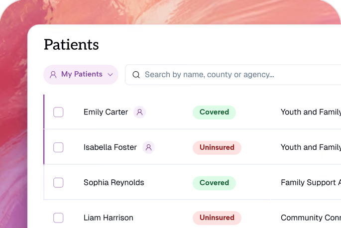
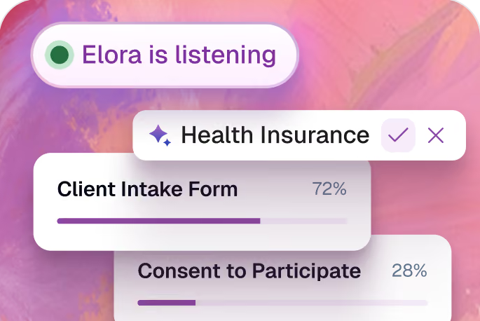
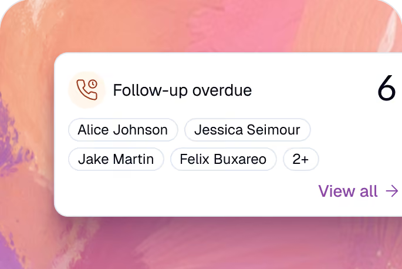

Elora
A secure care platform that helps frontline teams keep people covered.
Frontline caregivers were losing hours to paperwork. Elora needed a platform secure enough for sensitive care data, credible enough for investors, and shipped fast.
The challenge
Elora supports caregivers and social service professionals who coordinate care for the people who depend on them. Every hour spent on forms and follow-ups is an hour not spent with a client.
They needed a production system, not a prototype: one that protects sensitive data, scales with every new partner organisation, and holds up to investor scrutiny.
What we built
- Architecture for a secure, scalable system
- Caseload management
- Community referrals
- A collaborative care tool for frontline teams
- AI development and DevOps infrastructure, delivered across time zones


Built for the people doing the work. Caseloads, referrals and care coordination in one place.
Before the visit
Coverage status for every patient, before anyone walks in the door.
During the visit
Elora listens and completes intake and consent forms in the background.

After the visit
Overdue follow-ups surface automatically, so nobody falls through.
Elora’s platform today. Product imagery from elorahq.com.
I couldn’t be more impressed with the team at OPlus Dojo. Their commitment, expertise, and execution have been exceptional. Thanks to their work, our customers are thrilled, and both potential clients and investors have greater confidence in Elora’s vision and technology.